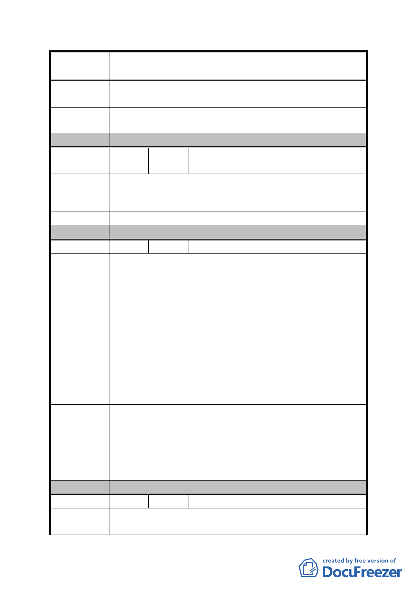

案
名
修訂臺北市「基隆河（中山橋至成美橋段）附近地區土地使
用分區與都市設計管制要點」（北段地區）計畫案
發局之共識草案開放 1/2 可供住宅使用，以符合百姓需
要及市場供需平衡。
建議辦法
建議本計畫區請依 98 年 9 月 10 日都發局之共識草案開放
1/2 可供住宅使用，以符合百姓需要及市場供需平衡。
委 員 會 決 議 同編號 1。
編
號
41
陳情人
臺北市議會陳議員玉梅、陳議員義洲
99.9.8 召開公聽會市民陳情意見
內湖科技園區陸續放寬商業使用，大彎北段地區地價高昂無
陳 情 理 由 法與地價低廉之內湖科技園區競爭，建請市都委會同意回歸
市場機制，比照第三種商業區規定，放寬得作住宅使用。
建 議 辦 法 （同上）
委 員 會 決 議 同編號 1。
編 號 42 陳情人 李亞珍等連署人
一、今日大直地區的發展，遠遠落後於內湖工業區，長期以
來台北市政府對內湖工業區的使用分區不斷放寬，由原
本的工業區及倉儲區經過 11 次的逐步放寬，如今不僅
僅是一般事務所（辦公室）、大型餐飲業、金融業、百
貨業、娛樂業，甚至財團企業總部都已進駐，所有商業
陳情理由
金融、健身娛樂百貨，都已被內湖工業區取代。當初在
開放過程中，已有 2000 餘家公司行號違規使用，但經
過了 11 次的開放，市府均給予了合法使用。
二、如今大直商業地區，早已喪失商業功能，高價分回的商
業用地，如今雜草叢生，無開發商機，後期承買的屋主，
多做為住宅使用，亦面臨市府查輯違規使用拆除的窘
境。
一、大直商業區回歸到台北市的一般商業區規定，不該再受
限「不得做住宅使用」。
建議辦法
二、現已居住在商業區的住戶，應比照內湖工業區，給予合
法居住的權利。
三、基河國宅的一樓使用，應配合現狀檢討回歸到第三種住
宅區使用。
委 員 會 決 議 同編號 1。
編 號 43 陳情人 林炳聰等 4 人
陳情理由
我是住宅區地號 55-2 的地主，面積有 250 幾坪，附近房子
都蓋起來了，只剩下我的跟旁邊農田水利會一塊更小 130 幾
- 101 -